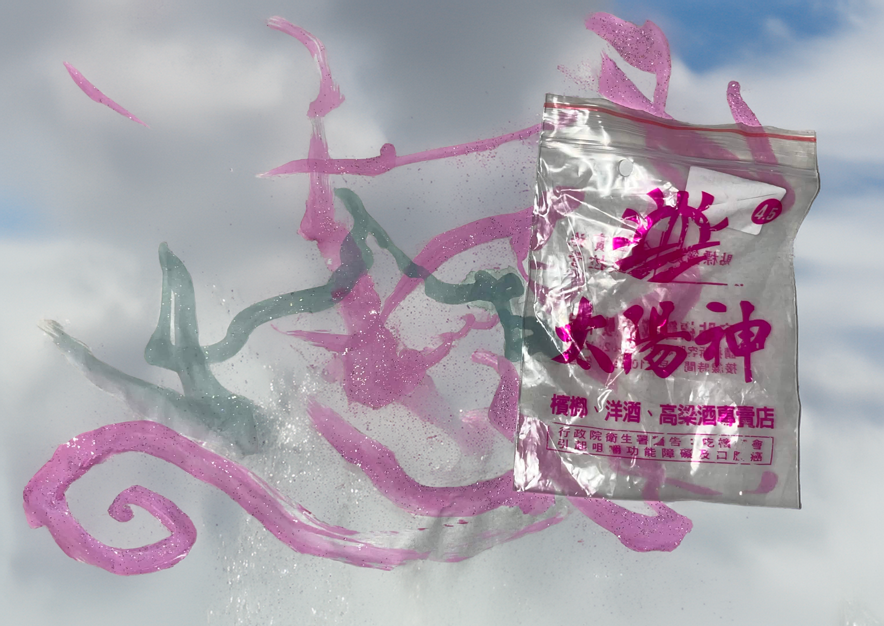

ねちょねちょのピンクの内壁のスペースシップから地球を見下ろし、足の下で白く広がるものが雲なんだと認識するころには、足も背中も目や脳すらも、旋毛や銀河、心に見いだされるような右回りの渦に巻き込まれていた。ヴァルが空から降ってくる！ ヴァルの感覚する世界は無限に透き通る青の中に広がってく。空気やマグマ、それぞれのエレメンツ同士が熱狂的なダンスを踊り、ヴァルは落下とともに逆に重力感覚を失うことになる。思考、どんなイメージを投げかけてもすべてが無限の青へ発散していくこの無限の感覚の広がりの背後には、無限の闇が控え少しでも目をつむろうものならば、０、死の暗がりに落ちこむことは誰にでも本能的に理解ができる。バッハ、遊星、０のこと、、、、
無限に広がる青空で宇宙的時間が体に流れ込む間にも、しれっと白いベッドはだんだんとヴァルのほうへ近づいている。だが、青と交わっている今のヴァルには、そのベッドへの落下はもちろん感覚されず、この宇宙的時間の背後でベッドは彼を引き寄せているのだ。そんなように突然、ベッドに飛び込む寸前、白が彼を包み込む直前の、微分時間でのこと、そこには大洋の時間がつつましく、そして壮大なホールのように広がり彼を包み込む。彼はそのダンスする永遠のスポットで、夢をみる。大きく広がる青は閃光の束に、一閃の光線へまで還元されそれらの光の流れを飛び移り、弾けていくヴァル。空気、光、水、火、タンパク質からDNA、二重螺旋、愛、すべてはあらゆる加速度、方向、硬度で流れ、それらをジャンプしてファンタスティックライドに。駆け抜けていく。永遠のあの真理に向けて、またその周りを駆け巡る。ヴァルはベッドのギリギリ上で、そのやわらかさに包まれ、眠りについた。
ビッグヌードルが覆いつくす地球。大昔、宇宙からやってきたキノコを食べたサルが、松果体に光を貯めようと天に向かい二足歩行になったと同時に生まれた力、重力がヴァルを大洋から引き摺り出す。足の親指を地面にめり込ませて、太陽を見上げたその時に始まった重力の時間はビッグヌードルという知的生命体において収束した。「この世界は光と重力でできている」シモーヌヴァイユが涙の中で書き記した言葉は、帝国のスローガンに書き換わり、人間は光と重力に体を奪われた、この時間の終点。ヴァルはビッグヌードルに出会い、白いベッドに身を包むと無限に広がっていた世界が一気にゼロに収束し、眠りから醒めて体を感じる。あらゆる粒が体に衝突することによって。粒には様々ある。水、氷、そしてそれらの粒を固定化させるビッグヌードルの偏在する意志に。
「いえーい、やーー」ヴァルは叫んで、雲を抜け出す。彼はビッグヌードルのおかしいほどにだらしなさからかけ離れた整合の対話をなんかするりと抜け出した。それがいつもやるように、意識を微小時間と、透明な博物館アーカイブにし体の何かが透き通り、光と重力に分裂するようには、ヴァルに作用しなかったのだ。彼にとって、そのベッド、雲の中の、粒の近さとその痛覚で体が分かることと、何か遊びがはじまること、それだけが大事であったということ。粒が世界から上にはね出て行って、ハイパスフィルターがハイに突き抜けるように、白が消えて、世界が再び開けた。ヴァルの足元に、大きく青い海と、真っ黒い火山が広がっていて、あらゆる色が濃く見えて、鳥も魚も犬も飛行機もいた。「すべてのものにキスしちゃおっかなわあ」とヴァルに思考が流れて、走り始めたばかりの体を動かして、暖かい空気を抱きかかえたり、飛行機の翼に尿をはねさせたり、鳥のように歌ったり、野犬とボクシングをして仲良くして、それらを全部同時にヴァルはこなせた。

「危機レベル１に到達。オアフ島火山型迎撃装置を一斉起動。エネルギー供給のために、第４銀河太陽へのゲートも開放。一斉に放出せよ。」オアフ島の地下深くマントルに眠るゲートが開いて、第４銀河太陽ミラリスのエネルギーでとてつもない胎動が、地球を震わし、地下の液体が激烈に光を放射して、バチーン。オアフ島からマグマが噴き出した。
「うわーかっこいい！俺この色もめっちゃ好き！」ヴァルはこの時初めて見る赤色に、耳を膨張させて、筋肉に硬質性があることを体験した。ヴァルの見つめるこの星の表面、地球の海や大地は鮮烈なマグマの赤にとんでもないスピードでかき替えられ、その噴出孔の破裂する黒くにじんたグロテスクは、ヴァルの筋肉を鍛え上げ、硬さを覚えたヴァルは稠密する硬さの中にうごめくエナジーが、何とか奇跡的に形を保っているだけだと筋肉の繊維に流れる血のようなもので知る。「ヴァーナル！」
その叫びに一瞬マグマがたじろぎ、やさしい炎のようにヴァルの視界を覆いつくすほどまで眼球に近づき、彼を抱え込んだ。皮膚が熱に包まれ、熱は全身をビートではなくライザー、音響のクレッシェンドに変容させるも、ライザーする世界に、ヴァルが瞼をつむらすことはなかった。ループするビートではなくてこのひたすら上っていくライザーはホワイトノイズに破裂することを防ぎながら、叫びのこもった歪みにおいてエネルギーを増してくライザーであり、ヴァルは目を見開き、鼻をかっぴらいて、七つの穴をもって開いて、超高温のマグマに抱きつかれ、生まれたばかりのヴァル、なのにもう奥深いところのこころを、全身の筋肉、それにほとばしる血液に増強させ、咆哮する!!!
〈グわおおおおーん〉
空気を震わす轟音が響いて、空は、ショットに貫かれたような沈黙さ、ここで一回。歴史にセルフィが刻まれる。歴史の映画の上映、映画館の客、エロい体をシャッと街に切り込みいれる、エロいギャルのスマホのシャッターに切断され、その断絶面から、新しいセルフィ―、あたらしい自我の時間軸が始まった。赤く勃起したちんこがたくましく、すべてに広がった光にさらされて、大いなる影がマグマをファックし、ヴァルは体のおくのエネルギーをその咆哮で、すべてマグマにぶつけた。マグマはヴァルのものになった。ヴァルはマグマの蠢き、空間を駆け巡ってくその動きの、中心核として分裂し、それは二つのヴァルに分裂が起きたということ。二つの焦点がマグマの空間的な広がりを作っていくように。そしてマグマは、ヴァルの血液の奥深くを常に沸騰させる、巨大で獰猛な溶鉱炉となったのだ。一つの焦点は、ミラリスへのゲートのあった地球の核に。もう一つの焦点は、ハイスピードで宇宙を駆け回った。そしてこのヴァルの分裂した二つの焦点というものは点自体の持つエネルギーの流れにより、マグマを空間的に自由自在に変容し引き延ばしては、絞ったりなど宇宙空間に自由に絵を描けるのだ。そしてそれを描く手、宇宙にマグマで自由にお絵かきを遊ぶ手、その実存の焦点が、地球の核に存在しだした。